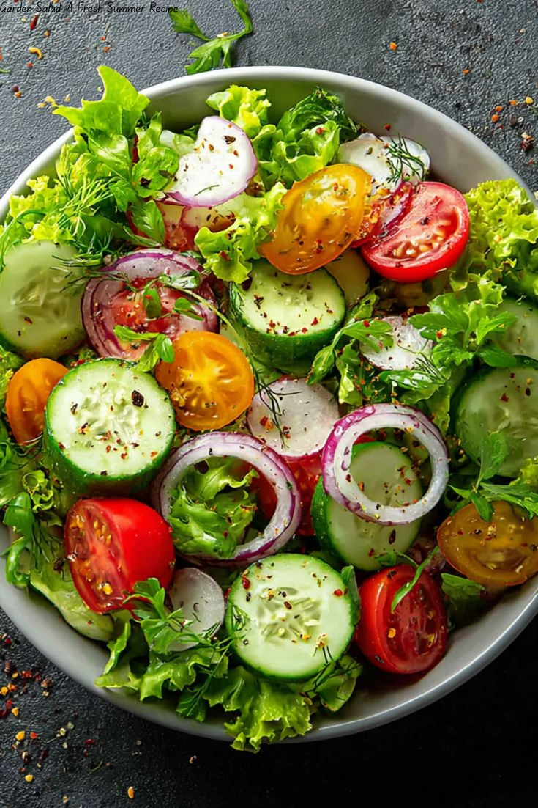

Salads are fresh, healthy, and versatile dishes made with a variety of vegetables, fruits, and optional proteins. They can be served as a side or a main course and are perfect for a light, refreshing meal. With endless combinations of ingredients and dressings, salads are a great way to enjoy nutritious food with vibrant flavors.
